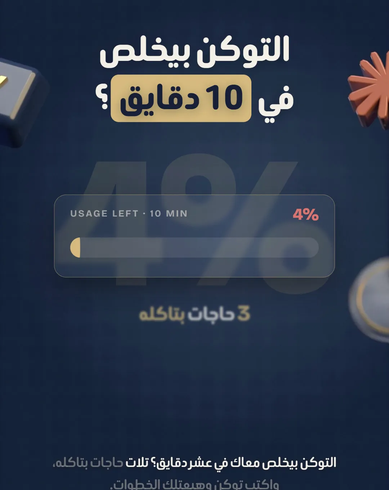
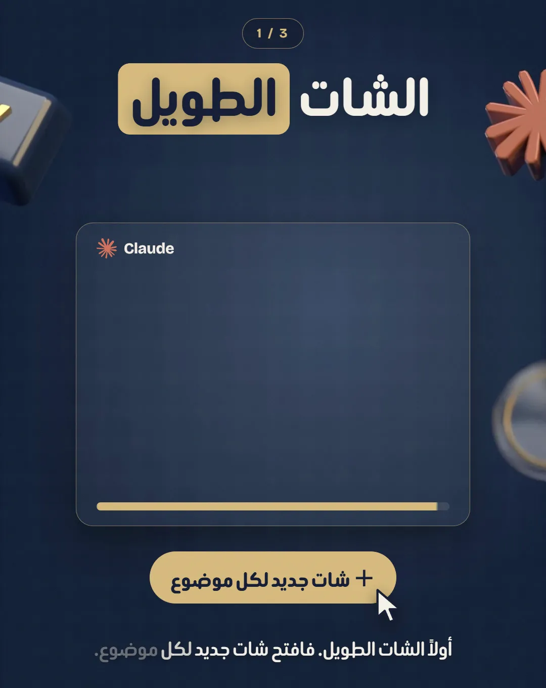
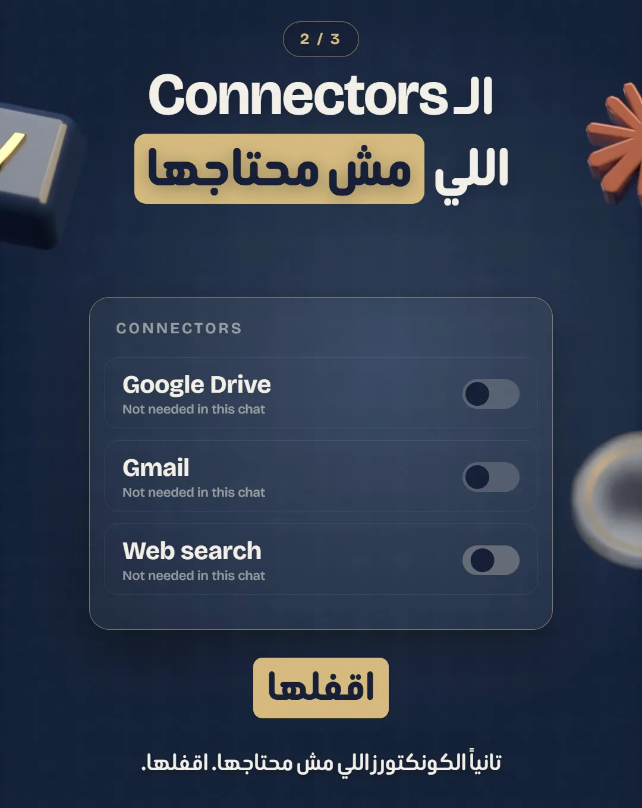
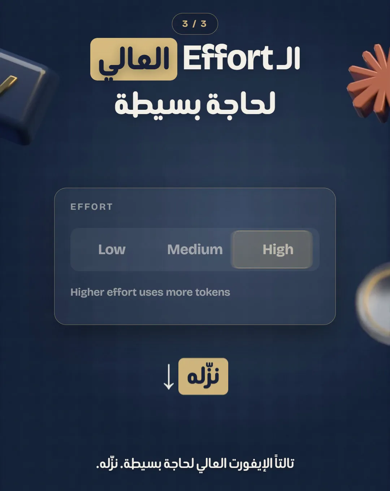

التوكن بيخلــصفي 10 دقايـــق؟
لو حد الاستخدام في Claude بيخلص معاك بسرعة، المشكلة غالبًا مش في الباقة. دي 3 حاجات بتاكل حدّك من غير ما تاخد بالك، من صفحة Anthropic الرسمية عن حدود الاستخدام، وإزاي توفّر في كل واحدة.


ليه بيخلص بسرعة؟
Claude مش بيحسب عدد الرسايل وبس. كل رسالة بتبعتها بيتقري معاها الشات كله من الأول، والملفات اللي رفعتها، والأدوات المفتوحة. يعني نفس السؤال في شات طويل بياكل من حدّك أضعاف ما ياكله في شات جديد. تقدر تشوف استهلاكك من Settings ثم Usage.
صفحة Anthropic عن حدود الاستخدام ↗
مثال من الريل: 10 دقايق شغل والحد نزل لـ 4% - 01
الشات الطويل
افتح شات جديد لكل موضوع. ولو الشات طوّل ومحتاج تكمّل نفس الشغل، اطلب من Claude ملخص قصير، وانسخه في شات جديد وكمّل من هناك. كده Claude مش هيقرا مية رسالة قديمة مع كل سؤال.
لخّصلي الشات ده في نقط قصيرة: إحنا فين، إيه اللي اتعمل، وإيه الخطوة الجاية، عشان أكمّل في شات جديد.
الشات الطويل بياكل الحد، والحل: شات جديد لكل موضوع - 02
الـ Connectors اللي مش محتاجها
كل Connector أو أداة شغّالة (Google Drive، Gmail، Web search…) بتضيف كلام لكل رسالة حتى لو مش بتستخدمها. من زرار الأدوات تحت مربع الكتابة، اقفل اللي مش محتاجه في الشات ده، وافتحه بس لما تحتاجه.

اقفل الكونكتورز اللي مش محتاجها في الشات ده - 03
الـ Effort العالي لحاجة بسيطة
كل ما الـ Effort (أو التفكير الطويل) يعلى، Claude بيفكّر أكتر قبل ما يرد وبياخد توكن أكتر. سيبه عالي للحاجات الصعبة زي الكود والتحليل، ونزّله Low أو Medium للأسئلة العادية والإيميلات والترجمة.

نزّل الـ Effort لـ Low في الحاجات البسيطة
نصايح صغيرة
- اجمع أسئلتك في رسالة واحدة بدل ٥ رسايل ورا بعض: كل رسالة بتقرا الشات كله من الأول.
- الملفات الكبيرة ارفعها مرة واحدة في Project بدل ما ترفعها في كل شات.
- الحد بيتجدد على فترات (جلسة كل كام ساعة، مش مرة في الشهر)، وميعاد التجديد مكتوب في صفحة Usage.
عايز حد يعملهولك؟
مش فاضي تتعلم وتعمل بنفسك؟ أنا بعمل ريلز لبراندك بنفس الطريقة اللي بشرحها هنا.